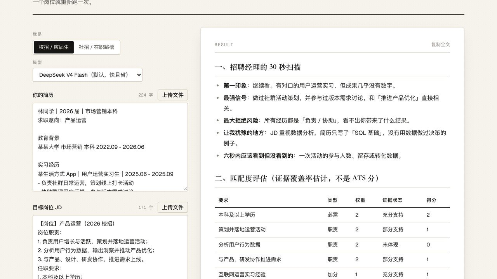
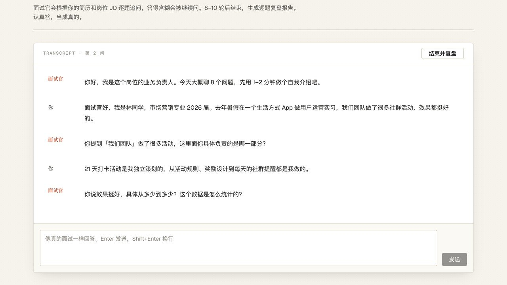

Offer Accelerator
For job seekers. The problem: resume edits miss the point, you don't know what the interview will ask, and nobody is there to practice with. Paste your resume and target role, then go through resume rewrite, predicted interview questions, mock interview and review in one pass. Pay-per-use, bought directly through Alipay.Live site ↗
How it works
From application to interview, four steps
BeforeEdit the resume yourself, memorize answers for the interviewAfterPaste resume and role, run straight through to the review
01Resume × role targeting🤖 AI
- Checks each job requirement and scores the match, then rewrites section by section into a version you can submit; no invented experience, and places missing data are flagged for you to fill in
02Predicted interview questions🤖 AI
- Cross-reads resume and role, finds the risk points likely to be probed, gives high-probability questions, each with what it tests and how to answer
03Mock interview + review👤 Human + 🤖 AI
- AI follows up question by question like an interviewer; you answer. At the end: a five-dimension score, per-question comments, and the two things most worth fixing
04Pay-per-useAlipay
- New users get 2 free tries, then buy a credit pack; when credits run out a purchase prompt appears, and after payment the previous request resumes automatically; failed calls are not charged
What it looks like


